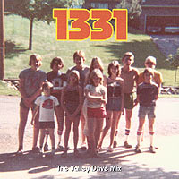

1331: The Valley Drive Mix

click image for larger view
This is a compilation of the music I listened to when growing up at 1331 Valley Drive, Akron, Ohio. The era—1978 and 79. It's a mixed CD that only I (and my little brother) could love... I think you had to be there.
The disc was made using the CD recorder I got for Christmas and my stack of well-worn original vinyl albums. I had a great evening sitting in front of the stereo, looking at the cover art (nice and big!), and surprising myself by knowing every word to every song despite the passage of 20-some years. It is by no means a complete picture of the music from that time (some records are still at my parents'), but it's a fun cross-section.
I post the songlist to 1331 here with no apologies:
Molkie Cole: Sugar Boogie
Ace Frehley: Back in the New York Groove
Blondie: One Way or Another
Led Zeppelin: Black Dog
Todd Rundgren: All the Children Sing
Bruce Springsteen: Thunder Road
Michael Stanley Band: Misery Loves Company
Ringo Starr: Photograph
The Knack: My Sharona
The Cars: Let the Good Times Roll
Molkie Cole: Winter
Cheap Trick: I Want You to Want Me
Utopia: The Road to Utopia
Van Halen: Running with the Devil
Todd Rundgren: Just One Victory
Ian Hunter: Cleveland Rocks
[note: Molkie Cole and Michael Stanley Band were huge in Cleveland, but never really made it nationally.]
The cover art was taken from an old photograph just before I moved away from Valley Drive in 1979. I'm the 4th from the right. My brother Liam is the little guy with glasses on the left. Of the remaining kids in the photo, one moved away and became a windsurfing instructor, one spent 2 years in prison, one has 8 children and 4 ex-husbands, two became lawyers, one is dead. The others are doing the married-with-kids thing.
You can never go home again, but you can still rock out to the music! I knew if I waited long enough, this stuff would sound cool.


{kind=link}